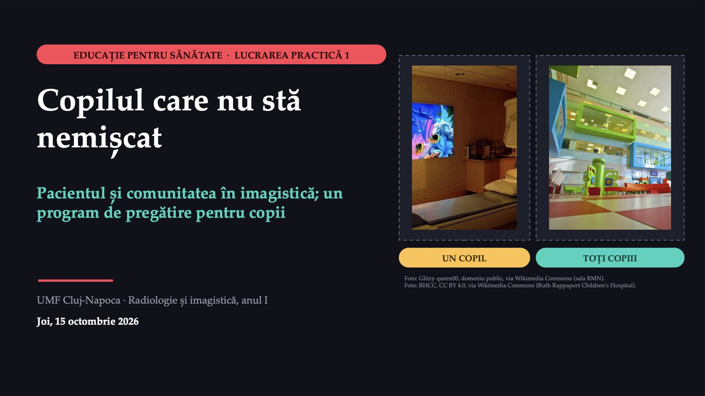

Copilul care nu stă nemișcat

1 / 18Aceeași ședință, două întrebări
![MENTIMETER · VOT CE FACEM CU RĂSPUNSURILE VOASTRE Întâi citim toate răspunsurile de la biletul de ieșire al primului curs.Apoi alegem două modificări și le aplicăm de la ședința următoare. Aceeași ședință, două întrebări REZONANȚĂ · ANDREI, ȘASE ANI Zgomot, frică, capul se mișcă Imagini neclare, examinare oprită Reprogramat peste trei săptămâni, cu anestezie generală De ce nu stă nemișcat? Examinarea poate cere 45 de minute sau mai mult de stat nemișcat, într-un tunel care face zgomote puternice. LABORATORUL · ȘEDINȚA LUNARĂ Copii mici, multe cu sedare sau anestezie Așteptare pentru zilele cu anestezist: mai lungă Examinări repetate: imaginile ies mișcate Din registrul secției. Coordonatorul întreabă: „Ce putem schimba pentru toți copiii care vin la noi?” În fiecare caz sunt două întrebări. Care aparține sănătății comunitare? Mentimeter: intrați pe menti.com cu codul afișat pe ecran.](diapozitive/LP01/002.jpg) 2 / 18
2 / 18Răspunsul apare după ședință
Răspunsul apare după ședință
Comunitatea și medicina comunitară
![PRIMII DOI TERMENI NOI Comunitatea și medicina comunitară TERMENUL 1 · COMUNITATEA Un grup de oameni cu ceva important în comun și cu nevoi asemănătoare. Un cartier, o școală, copiii unui județ trimiși la rezonanță magnetică și părinții lor. TERMENUL 2 · MEDICINA COMUNITARĂ Grija pentru sănătatea unui grup întreg, nu a unui singur pacient. pacientul comunitatea diagnosticul date despre grup tratamentul un program Glosarul Organizației Mondiale a Sănătății, 1998 (comunitatea) și 2021 (evaluarea nevoilor).](diapozitive/LP01/004.jpg) 4 / 18
4 / 18Un copil, toți copiii
![ȘASE DEOSEBIRI Un copil, toți copiii MEDICINA INDIVIDUALĂ SĂNĂTATEA COMUNITARĂ Pe cine îngrijiți copilul de pe masa aparatului toți copiii care vor veni la examinare în următoarele luni Cine face primul pas pacientul vine la ora programării echipa ajunge la copil și la părinți înainte de ziua examinării Diagnosticul ce vedeți la copil: frica, vârsta, boala datele secției: câte sedări, câte repetări, cât se așteaptă Ce faceți explicați, liniștiți, adaptați examinarea schimbați pregătirea tuturor: materiale, programări, protocoale Cum știți că a mers examinarea s-a încheiat cu imagini bune se schimbă cifrele secției: mai puține sedări și repetări Dacă alegeți doar una fiecare asistent o ia de la capăt cu fiecare copil copilul foarte speriat rămâne fără atenția de care are nevoie](diapozitive/LP01/005.jpg) 5 / 18
5 / 18Ce spun datele despre examinări
![DIAGNOSTICUL ÎNCEPE CU O CIFRĂ Ce spun datele despre examinări TOMOGRAFIE COMPUTERIZATĂ 2019 3 403 2024 9 807 REZONANȚĂ MAGNETICĂ 2019 1 416 2024 5 465 Examinări la 100 000 de locuitori, România, în spitale și în ambulatoriu; 2024 este ultimul an publicat. ÎN CUVINTE OBIȘNUITE Aproape o tomografie la zece locuitori într-un an. În cinci ani, tomografiile au crescut de aproape trei ori, rezonanțele de aproape patru ori. ATENȚIE Se numără examinări, nu oameni. Cifra nu spune câte s-au făcut la copii. Cu cât se fac mai multe examinări, cu atât mai mulți oameni au nevoie să știe dinainte ce îi așteaptă. Eurostat, hlth_co_exam; calcul pe baza cifrelor Eurostat.](diapozitive/LP01/006.jpg) 6 / 18
6 / 18Un risc mic, la mulți copii
![DUPĂ GEOFFREY ROSE Un risc mic, la mulți copii STRATEGIA RISCULUI ÎNALT Căutați copiii foarte speriați și îi pregătiți intens, cu un aparat-machetă. STRATEGIA POPULAȚIONALĂ Pregătiți simplu toți copiii: o broșură cu imagini, un film scurt, sunetele aparatului ascultate acasă. De obicei nu sunt în competiție; prima grijă rămâne controlul cauzelor. VALORI IPOTETICE Sedările dintr-un laborator, într-un an 300 de copii foarte speriați (șansă de sedare 60%) 180 de sedări 1 700 de copii mai liniștiți (șansă 15%) 255 de sedări Din 2 000 de rezonanțe la copii mici. Cu alte valori, rezultatul se poate inversa.](diapozitive/LP01/007.jpg) 7 / 18
7 / 18Patru pași, o echipă, un telefon
![MICROSOFT FORMS · PARTEA I ECHIPE DE TREI-PATRU COLEGI DE BANCĂ Patru pași, o echipă, un telefon 1 Care întrebare aparține sănătății comunitare, în fiecare caz? 2 Cine este „pacientul” laboratorului și din ce se pune „diagnosticul”? Ce înseamnă cifra Eurostat în cuvinte obișnuite? 3 Calculați: ce procent dintre sedări apar la copiii mai liniștiți și câte sedări evită fiecare strategie. 4 Alegeți decizia care reflectă raționamentul lui Rose pentru laborator. REAMINTIRE Cifrele Eurostat numără examinări, nu oameni. Diagnosticul comunității se pune din datele grupului. Fiecare pas se deschide numai după răspunsul corect la cel dinainte.](diapozitive/LP01/008.jpg) 8 / 18
8 / 18Răspunsul apare după ședință
Răspunsul apare după ședință
Un pliant pentru părinți
![CAZUL · CEREREA SECȚIEI DE PEDIATRIE Un pliant pentru părinți De la: medicul-șef al secției de pediatrie Către: laboratorul de imagistică După ședința laboratorului am hotărât, împreună cu medicul coordonator, să facem ceva pentru copiii care vin la rezonanță magnetică. Propun „un pliant pentru părinți, dat la internare, cu ce trebuie să știe despre rezonanța magnetică”. Ce vrem să se schimbe pentru copiii care vin la examinare și cum vom ști dacă s-a schimbat? Un pliant dat la internare este informare, nu încă educație pentru sănătate. Ajunge la părinte, nu la copil, și ajunge târziu.](diapozitive/LP01/010.jpg) 10 / 18
10 / 18Pregătirea pacientului pentru examinare
![AL TREILEA TERMEN NOU Pregătirea pacientului pentru examinare TERMENUL 3 · PREGĂTIREA Tot ce face echipa, fără medicamente, ca pacientul să știe ce urmează, să se simtă în siguranță și să poată coopera. Copilului i se arată și i se dă ocazia să exerseze, nu doar i se spune. Părintele trebuie să știe ce îi poate spune copilului și ce nu. 1 Aparatul-machetă: o copie a aparatului, fără câmp magnetic, în care copilul exersează 2 Broșuri explicative și cărți cu imagini 3 Sunetele aparatului, ascultate acasă, cu părintele alături 4 Vizita în sala aparatului, înainte de ziua examinării](diapozitive/LP01/011.jpg) 11 / 18
11 / 1845 de minute
 12 / 18
12 / 18Răspunsul apare după ședință
Răspunsul apare după ședință
Șapte rubrici, o pagină
![FIȘA PROGRAMULUI Șapte rubrici, o pagină PROGRAM DE EDUCAȚIE PENTRU SĂNĂTATE 1 Problema, cu o cifră 2 Grupul 3 Obiectivul măsurabil 4 Activitățile 5 Partenerii 6 Resursele 7 Evaluarea VALORI IPOTETICE NU SE POATE EVALUA „Părinții vor înțelege importanța pregătirii copilului pentru examinare.” SE POATE NUMĂRA „Până la sfârșitul anului, proporția rezonanțelor făcute cu sedare sau anestezie la copiii de 3–10 ani programați în laborator scade de la 50% la 40%, numărată din registrul secției, înainte și după program.”](diapozitive/LP01/014.jpg) 14 / 18
14 / 18Fișa programului pentru copii
![FORMS · PARTEA A II-A LUCRAȚI VOI Fișa programului pentru copii A Pregătirea copiilor de 3–10 ani pentru rezonanța magnetică fără sedare B Părinții copiilor cu lovituri ușoare la cap care cer o tomografie „ca să fim siguri” C Adolescentele și întrebarea despre o posibilă sarcină înaintea unei examinări cu radiații La rubrica „problema”: porniți și de la ce v-a lipsit vouă sau familiei voastre la o examinare. Pentru tema B: sub 10 ani, un caz suplimentar de leucemie și unul de tumoră cerebrală la 10 000 de tomografii ale capului (Marea Britanie, 1985–2002). Partea a doua a formularului. ECHIPELE LUCREAZĂ 25 de minute DOUĂ ECHIPE, LA SORȚI trei minute fiecare SALA RĂSPUNDE „Cum vom ști, la sfârșitul anului, dacă programul a mers?”](diapozitive/LP01/015.jpg) 15 / 18
15 / 18Răspunsul apare după ședință
Răspunsul apare după ședință
Ce nu știm încă
![CE NU PUTEM SPUNE Ce nu știm încă Câte rezonanțe magnetice se fac anual la copiii din România și câte dintre ele cu sedare? Din datele consultate, nu se poate spune. Eurostat publică numărul total de examinări la 100 000 de locuitori, fără vârstă și fără sedare. De aceea, cifra problemei din fișă vine, deocamdată, din registrul propriu al secției. Recenziile reunesc programe cu componente diferite; nu știm care componentă a pregătirii contează cel mai mult. ACASĂ · FORMULARUL INDIVIDUAL Trei întrebări, aproximativ un sfert de oră, cu contul UMF. Din el se vede cine a lucrat. Răspunsurile nu se notează separat; explicația apare după trimitere.](diapozitive/LP01/017.jpg) 17 / 18
17 / 18Ce a fost util azi?
![ULTIMELE CINCI MINUTE · ANONIM CE FACEȚI DIFERIT DE MÂINE 1 Același tip de pacient oprește aceeași examinare: întrebarea laboratorului. 2 Cineva cere „un pliant”: ce se schimbă și cum numărați schimbarea. 3 Pregătiți un copil: arătați-i ce urmează, nu doar spuneți-i. TREI ÎNTREBĂRI PENTRU FINAL 1 Ce a fost util azi? 2 Unde v-am pierdut? 3 Ce ați putea folosi mâine? Mentimeter: intrați pe menti.com cu codul afișat pe ecran. La începutul ședinței următoare, pe pagina disciplinei, veți găsi două modificări făcute pe baza răspunsurilor.](diapozitive/LP01/018.jpg) 18 / 18
18 / 18Săgeți sau spațiu: navigare · O: vedere de ansamblu · N: notele prezentatorului · F: ecran complet · Esc: închidere